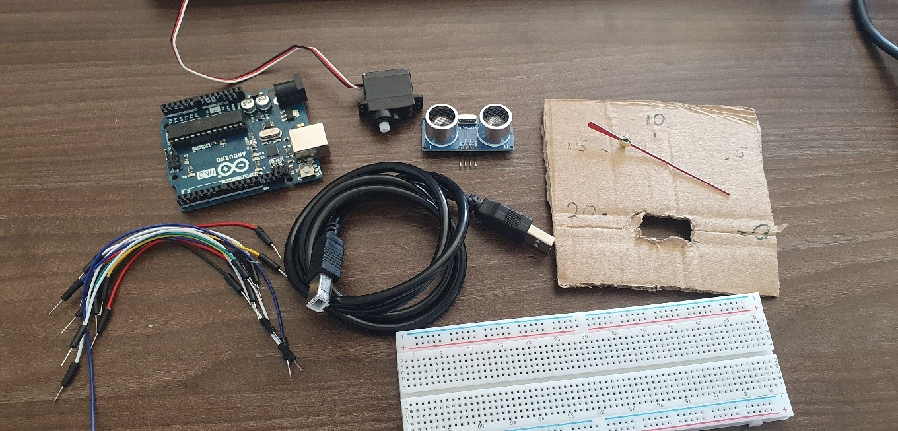
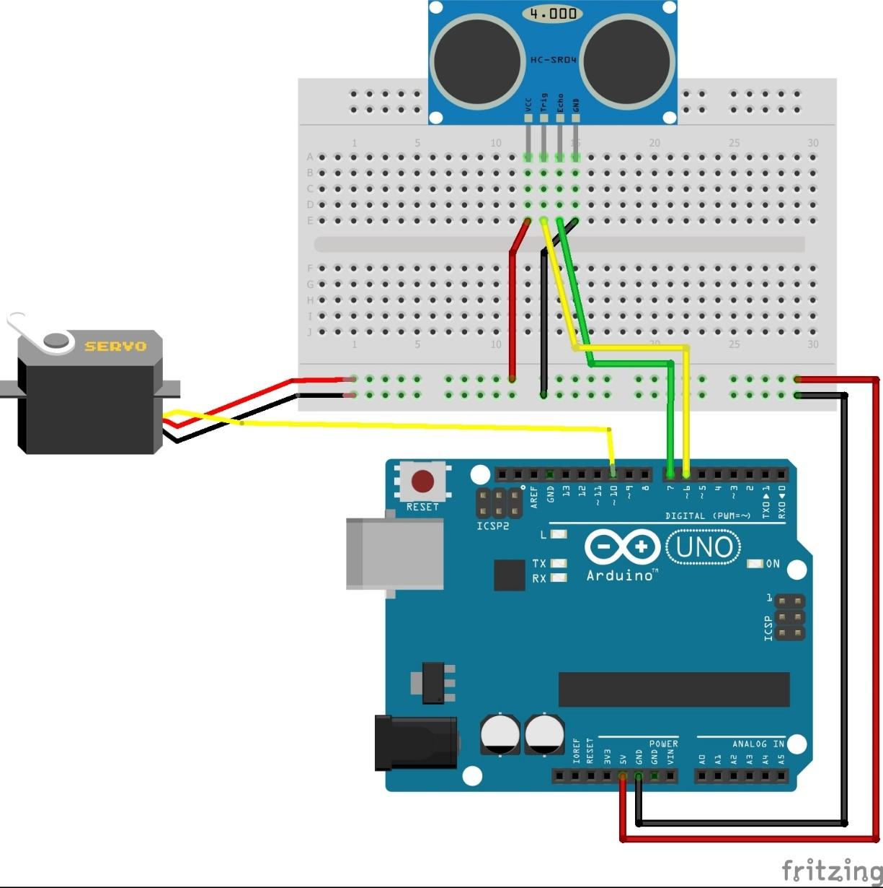
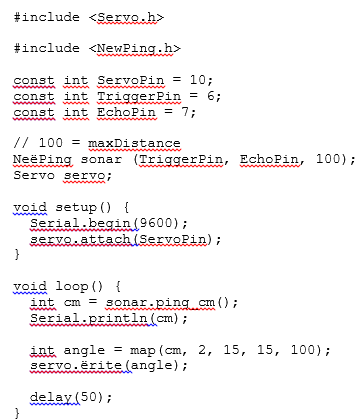
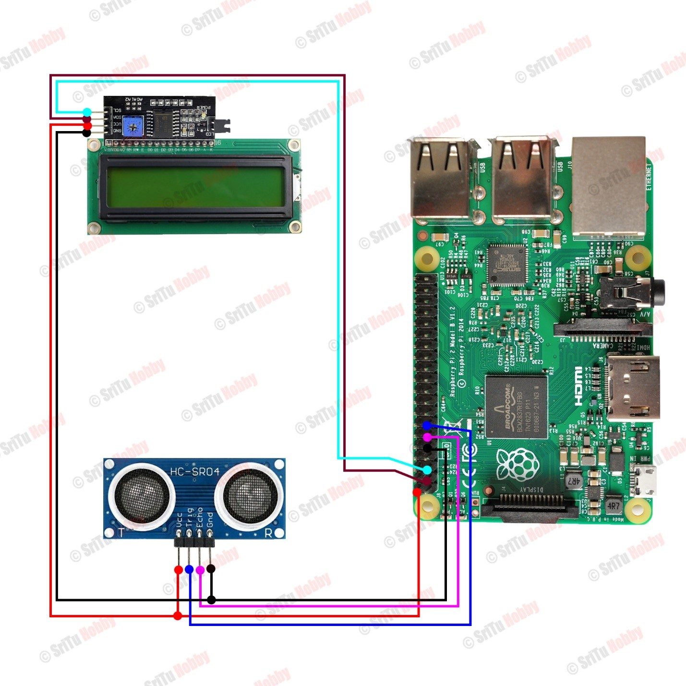
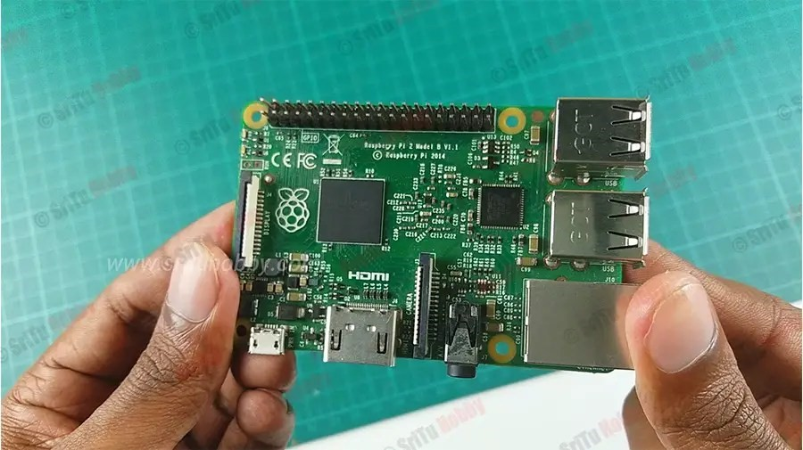
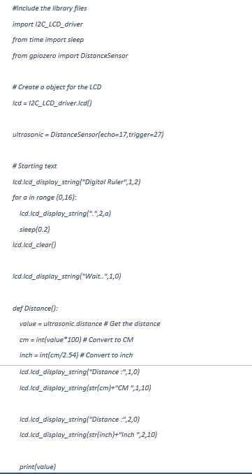
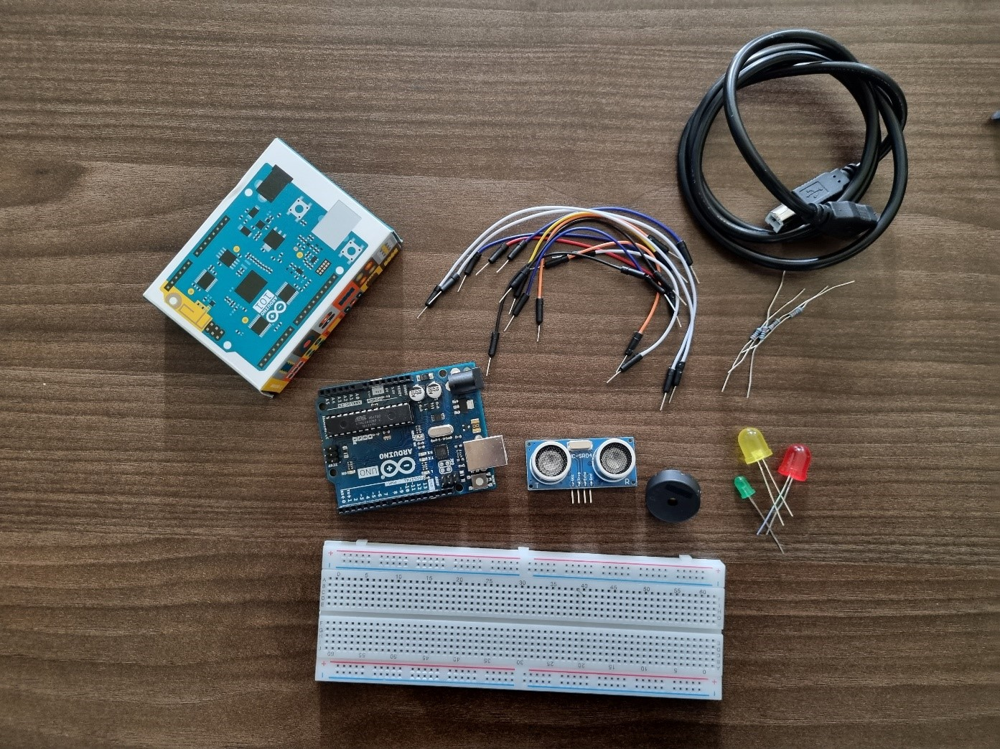
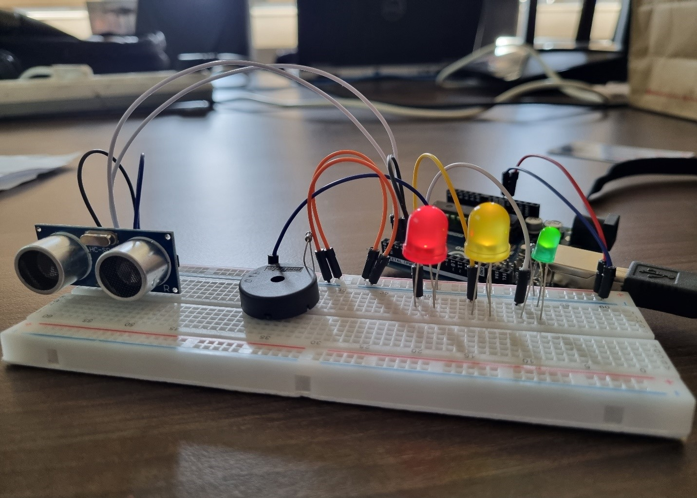

Project 1-Servo distance indicator
In this project, we have described an experiment conducted with an Arduino Uno that measures distance in centimeters using an ultrasonic sensor. Additional tools required for conducting the experiment include the following:
- Arduino uno
- Breadboard
- Micro servo 9g
- Ultrasonic sensor
- Jumper cables
- Cardboard
| 
|

|
|---|
To run an Arduino project using an ultrasonic sensor to measure distance, you'll need to write and upload a specific Arduino sketch (program) to your Arduino Uno board. Below is a basic example of Arduino code for this project:
For more interesting projects with Arduino Uno see the video:
Project 2-Digital ruler with a Raspberry Pi board
The project involves creating a digital ruler system using a Raspberry Pi.
The components used for this project include:
- Raspberry Pi board
- Ultrasonic sensor x 1
- I2C module x 1
- Breadboard x 1
- Male to Male jumper wires x 1
| 
|

|
|---|
Python script for this project:
Project 3
The project is focused on a security system using an Arduino Uno that incorporates an ultrasonic sensor. Additionally, the following tools are employed for the execution of this experiment:
- Buzzer
- Ultrasonic Sensor
- LED (RedLED, YellowLED, GreenLED)
- Arduino Uno
- Board
- Resistors (221 ohm)
- Jumper wires
| 
|

|
|---|